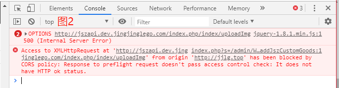
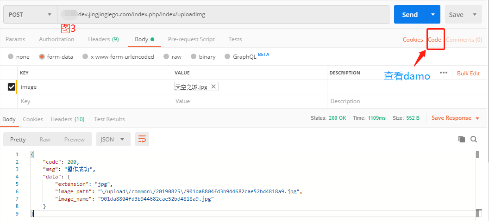
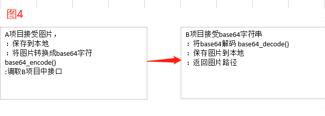

说，我有一个需求，就是一个临时功能。由于工作开发问题，我们有一个B项目，需要有一个商品添加的功能，涉及到添加商品内容，比如商品名字，商品描述，商品库存，商品图片等。后台商品添加的接口已经写完了，但是问题是目前没有后台页面，就是产品还没有出后台详细页面。前端已经完备了，上线了。后台还需要工作时间处理。所以目前的处理方法是在我们已经存在的A项目后台中，添加一个对B项目添加商品的功能。
一、当下问题
1、在我们已有的A项目中，新增一个添加商品的功能，这个本来是没有什么问题的，因为目前A项目中本身就已经连接了B项目的数据库，所以商品属性的新增和修改都没什么问题。主要是商品图片的上传这里，有点问题。B项目已经对外提供了上传图片的接口，但是由于我确实对前端不是特别熟悉。所以在A项目中的后台JS中调取B项目的上传图片的接口时，一直提示"CORS",这里应该是存在一个跨域的问题，虽然我PHP接口端已经对跨域做了处理（入口文件处），但是貌似JS这边也需要相应的调整。

// [ 应用入口文件 ]
//入口文件index.php
namespace think;
// 加载基础文件
require __DIR__ . '/thinkphp/base.php';
// 支持事先使用静态方法设置Request对象和Config对象
header("Access-Control-Allow-Origin: *");
header("Access-Control-Allow-Headers: Content-Type,XFILENAME,XFILECATEGORY,XFILESIZE,authorization");
// 执行应用并响应
Container::get('app')->bind('api')->run()->send();2、无奈小白JS功底不够扎实，所以我这边准备通过A项目中调取后台PHP接口，然后通过在PHP代码中接受web端参数，然后再转发，调取B项目中上传图片的接口，试图完成功能。于是先通过Postman接口工具测试了一下B项目上传图片的接口是否有效。如图3，发现确实没有什么问题，于是就准备如此处理。

3、但是实际是，在调取时，我们常用的传参数方式是GET或者POST方式，但是我们知道文件上传是通过$_FILES接受，下面是B项目的上传图片的控制器代码（用的是TP5.1），接受是通过内置的file方式。
/**上传图片
* @param Request $request
*/
public function uploadImg(Request $request){
$file = $request->file('image');
$type = $request->post('type', 0);
// 移动到框架应用根目录/uploads/ 目录下
$upload_path = config('common.upload_path');
switch ($type) {
case 1://门店
$path = $upload_path['shop_img'];
break;
case 2://投票活动
$path = $upload_path['vote_img'];
break;
case 3://投票活动参赛图片
$path = $upload_path['vote_contestant_img'];
break;
case 4://会员店铺logo图片
$path = $upload_path['member_shop'];
break;
case 5://自营商品图片
$path = $upload_path['self_goods'];
break;
default:
$path = $upload_path['common'];
break;
}
$save_path = env('root_path').$path;
$info = $file->validate(['ext'=>'jpg,jpeg,png,gif'])->move($save_path);
if($info){
$return = [
'extension' => $info->getExtension(),
'image_path' => $path.$info->getSaveName(),
'image_name' => $info->getFilename(),
];
$this->apiResult(CustomError::OPERATION_SUCCSESS, $return);
}else{
$this->apiResult(CustomError::OPERATION_FAILED, [], $file->getError());
}
}4、所以在转发A项目web端传来的，文件内容，就有点不知所措了。该死，该死。
//文件上传接受参数
array(1) {
["file_upload"] => array(5) {
["name"] => string(8) "timg.jpg"
["type"] => string(10) "image/jpeg"
["tmp_name"] => string(22) "C:\Windows\php73CE.tmp"
["error"] => int(0)
["size"] => int(355565)
}
}5、所以按刚才设想的，简单做下转发还是不行，这里面参数的传输方式应该还有另外一种，就是文件的类型。鉴于是通过Postman方式上传成功，这个工具确实很推荐多多学习，他不仅作为一个第三方中间为我们验证接口是否可用，更给我们提供了调取接口的各种代码Damo,如图3中标识的Code处，就是获取Damo的按钮。我们点击可以看见Postman给我提供了三种，调取接口的方式。
<?php
//1、HttpRequest 发送http请求
$request = new HttpRequest();
$request->setUrl('http://jszapi.dev.jingjinglego.com/index.php/index/uploadImg');
$request->setMethod(HTTP_METH_POST);
$request->setHeaders(array(
'cache-control' => 'no-cache',
'Connection' => 'keep-alive',
'Content-Length' => '39091',
'Content-Type' => 'multipart/form-data; boundary=--------------------------296608706222243058746908',
'Accept-Encoding' => 'gzip, deflate',
'Host' => 'jszapi.dev.jingjinglego.com',
'Postman-Token' => 'dc010150-b166-4dec-a33f-959a65c91c71,be7315cb-ae21-404f-89fa-dddf5973eb3a',
'Cache-Control' => 'no-cache',
'Accept' => '*/*',
'User-Agent' => 'PostmanRuntime/7.15.2',
'content-type' => 'multipart/form-data; boundary=----WebKitFormBoundary7MA4YWxkTrZu0gW'
));
$request->setBody('------WebKitFormBoundary7MA4YWxkTrZu0gW
Content-Disposition: form-data; name="image"; filename="785da43beca5a474.jpg"
Content-Type: image/jpeg
------WebKitFormBoundary7MA4YWxkTrZu0gW--');
try {
$response = $request->send();
echo $response->getBody();
} catch (HttpException $ex) {
echo $ex;
}
<?php
//2、pecl_http 需要开启PECL HTTP 扩展
$client = new http\Client;
$request = new http\Client\Request;
$body = new http\Message\Body;
$body->addForm(NULL, array(
array(
'name' => 'image',
'type' => null,
'file' => '/E:/MyBooks/网站图标/网站素材/785da43beca5a474.jpg',
'data' => null
)
));
$request->setRequestUrl('http://jszapi.dev.jingjinglego.com/index.php/index/uploadImg');
$request->setRequestMethod('POST');
$request->setBody($body);
$request->setHeaders(array(
'cache-control' => 'no-cache',
'Connection' => 'keep-alive',
'Content-Length' => '39091',
'Content-Type' => 'multipart/form-data; boundary=--------------------------296608706222243058746908',
'Accept-Encoding' => 'gzip, deflate',
'Host' => 'jszapi.dev.jingjinglego.com',
'Postman-Token' => 'dc010150-b166-4dec-a33f-959a65c91c71,3216cc22-be61-4d4b-8d41-c5178848b54f',
'Cache-Control' => 'no-cache',
'Accept' => '*/*',
'User-Agent' => 'PostmanRuntime/7.15.2'
));
$client->enqueue($request)->send();
$response = $client->getResponse();
echo $response->getBody();<?php
//3、cURL 是一个非常强大的开源库，支持很多协议，包括HTTP、FTP、TELNET等，我们使用它来发送HTTP请求。
//它给我们带来的好处是可以通过灵活的选项设置不同的HTTP协议参数，并且支持HTTPS。CURL可以根据URL前缀是“HTTP” 还是“HTTPS”自动选择是否加密发送内容。
$curl = curl_init();
curl_setopt_array($curl, array(
CURLOPT_URL => "http://jszapi.dev.jingjinglego.com/index.php/index/uploadImg",
CURLOPT_RETURNTRANSFER => true,
CURLOPT_ENCODING => "",
CURLOPT_MAXREDIRS => 10,
CURLOPT_TIMEOUT => 30,
CURLOPT_HTTP_VERSION => CURL_HTTP_VERSION_1_1,
CURLOPT_CUSTOMREQUEST => "POST",
CURLOPT_POSTFIELDS => "------WebKitFormBoundary7MA4YWxkTrZu0gW\r\nContent-Disposition: form-data; name=\"image\"; filename=\"785da43beca5a474.jpg\"\r\nContent-Type: image/jpeg\r\n\r\n\r\n------WebKitFormBoundary7MA4YWxkTrZu0gW--",
CURLOPT_HTTPHEADER => array(
"Accept: */*",
"Accept-Encoding: gzip, deflate",
"Cache-Control: no-cache",
"Connection: keep-alive",
"Content-Length: 39091",
"Content-Type: multipart/form-data; boundary=--------------------------296608706222243058746908",
"Host: jszapi.dev.jingjinglego.com",
"Postman-Token: dc010150-b166-4dec-a33f-959a65c91c71,982e059e-bd8b-4db9-83c4-3fd52c8ed82f",
"User-Agent: PostmanRuntime/7.15.2",
"cache-control: no-cache",
"content-type: multipart/form-data; boundary=----WebKitFormBoundary7MA4YWxkTrZu0gW"
),
));
$response = curl_exec($curl);
$err = curl_error($curl);
curl_close($curl);
if ($err) {
echo "cURL Error #:" . $err;
} else {
echo $response;
}6、如上面3个代码片段，但是后来验证后，发现1/3的参数，不知道是怎么传输的，2的参数很容易看懂，但是运用的话需要开启扩展，这个目前不太合适，所以┭┮﹏┭┮。
二、写在心里
1、这个上传的问题，确实卡住了，感觉有点难过。其实每次都会遇见一个自己的困难，经常遇见，周末下午的时候，我在家打开电脑，打来远程，准备登陆下ftp拉下代码，发现一直连不上，心里那个烦啊。但是还是通过远程工具（向日葵），将代码拉下来了。想这个图片上传到底怎么弄了，之前也看过，关于通过ftp的方式上传图片，但是后来查看了相关文章需要在php.ini中开启，所以也作罢。
#开启ftp扩展支持
extension=php_ftp.dll2、经常遇见困难，经常觉得自己很LOW但是，已经工作了这么久，发现其实问题最后又都解决了，但是现在回想，却忘了到底是怎么解决的，所以写这个博文主要也是想记录下。一直到下午4点多，深圳的天气今年闷热居多，中午我已经昧着良心午休了1个小时，所以现在到现在心里还有些许内疚，唉。
3、但是还是找不到解决的方法，头疼的厉害，好热。怎么办，我决定靠在椅子上休息下，于是我还是决定躺在沙发上睡会。刚躺下，想着这怎么办呢。
-----------------------base64---------------------------华丽的分割线
我突然想到了base64这个读起来，朗朗上口的函数，对如果现将图片转换成base64字符串，再通过POST方式传送给B项目，然后再B项目中对字符串进行解码，生成图片，保存到B项目，然后返回图片路径，不就可以了吗。于是我有推了一遍，发现没有疏忽。于是觉得应该是解决了。

三、解决图片上传问题
1、A接受web传来图片临时文件，
#上传图片京手指 1:图片保留到本地
public function uploadJszImg()
{$path = config('business.jsz_file_tem');
$file = request()->file('file_upload');
$info = $file->validate(['ext'=>'jpg,jpeg,png,gif'])->move($path);//图片保存到本地
$img_one = $path.$info->getSaveName();//图片路径
$img_base = imgToBase64($img_one);//获取图片base64编码格式
deleteFileWay($path);//删除临时文件
$url = config('business.jsz_api')['baseImg'];
$data = [
'base_string'=> $img_base,
'path' => 'upload/goods_img',
];
$res = http_api($url,$data,1);
$res = json_decode($res,true);
if($res['data']){
$return = ['code'=>1,'message'=>'成功','data'=>'jszapi.dev.jingjinglego.com'.$res['data']];
}else{
$return = ['code'=>0,'message'=>'失败'];
}
return $return;
} 2、并转换成base64字符串，
/**
* 获取图片的Base64编码(不支持url)
* @param $img_file 传入本地图片地址
* @return string
*/
function imgToBase64($img_file) {
$img_base64 = '';
if (file_exists($img_file)) {
$app_img_file = $img_file; // 图片路径
$img_info = getimagesize($app_img_file); // 取得图片的大小，类型等
//echo '<pre>' . print_r($img_info, true) . '</pre><br>';
$fp = fopen($app_img_file, "r"); // 图片是否可读权限
if ($fp) {
$filesize = filesize($app_img_file);
$content = fread($fp, $filesize);
$file_content = chunk_split(base64_encode($content)); // base64编码
switch ($img_info[2]) { //判读图片类型
case 1: $img_type = "gif";
break;
case 2: $img_type = "jpg";
break;
case 3: $img_type = "png";
break;
}
$img_base64 = 'data:image/' . $img_type . ';base64,' . $file_content;//合成图片的base64编码
}
fclose($fp);
}
return $img_base64; //返回图片的base64
}3、B接受A项目传来参数
/**
* 将base64字符串转换成图片并保存在本地
* @param Request $request
* @return void
*/
public function baseImg(Request $request)
{
$base_string = $request->post('base_string', '');
if (!$base_string) {
$this->apiResult(CustomError::MISSING_PARAMS);
}
$path = $request->post('path', '');
if (!$path) {
$this->apiResult(CustomError::MISSING_PARAMS);
}
$request = base64_image_content($base_string, $path);//解码
if($request){
$this->apiResult(CustomError::OPERATION_SUCCSESS, $request);
}else{
$this->apiResult(CustomError::OPERATION_FAILED);
}
}4、对字符解析解码
/**
* [将Base64图片转换为本地图片并保存]
* @param [Base64] $base64_image_content [要保存的Base64]
* @param [目录] $path [要保存的路径]
*/
function base64_image_content($base64_image_content,$path){
//匹配出图片的格式
if (preg_match('/^(data:\s*image\/(\w+);base64,)/', $base64_image_content, $result)){
$type = $result[2];
$new_file = $path."/".date('Ymd',time())."/";
if(!file_exists($new_file)){
//检查是否有该文件夹，如果没有就创建，并给予最高权限
mkdir($new_file, 0700);
}
$new_file = $new_file.time().".{$type}";
if (file_put_contents($new_file, base64_decode(str_replace($result[1], '', $base64_image_content)))){
return '/'.$new_file;
}else{
return false;
}
}else{
return false;
}
}5、最后返回上传好的图片路径
：结束